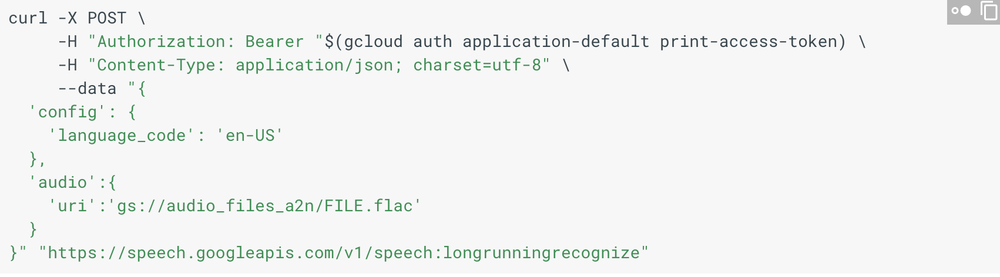
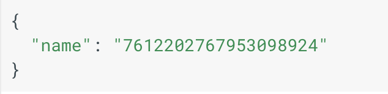
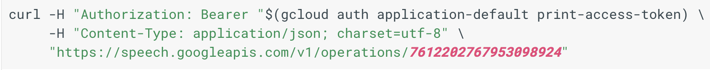

Speech 2 text using google
Follow the following tutorial(Steps 1 and 3, NOT 2 yet) if using google cloud for the first time and make sure you download google SDK. Also make sure that the service credentials are downloaded to a JSON file on your computer.
Configure path using --> export GOOGLE_APPLICATION_CREDENTIALS="/Users/20arjuna/Desktop/A2N/A2N-Official-bd3ee1c6cc61.json" Make sure the file you input here is the file where the api key is located, NOT the audio file
Convert your youtube video to a flac file with the following link.
To convert this flac file from a stereo to a mono type file: "cd" until you get to the directory where the flac file is stored. Initiate the brew command by typing the following into your terminal: brew install ffmpeg. Then use the following command: ffmpeg -i FILENAME.flac -ac 1 OUTPUTFILE.flac
Upload the file to a bucket in google storage, probably in the audio_files_a2n bucket. Navigate to the directory of your "google-cloud-sdk" folder. Now make sure the name of the flac file is substituted into the uri in the below code (represented in the curlpost image). The uri should look something like gs://audio_files_a2n/FILENAME.flac . Run the following code in terminal.

This returns a number like this

Insert that number to the following prompt

Keep running the above prompt again and again. Till it works. (Assuming you don't get any errors.0